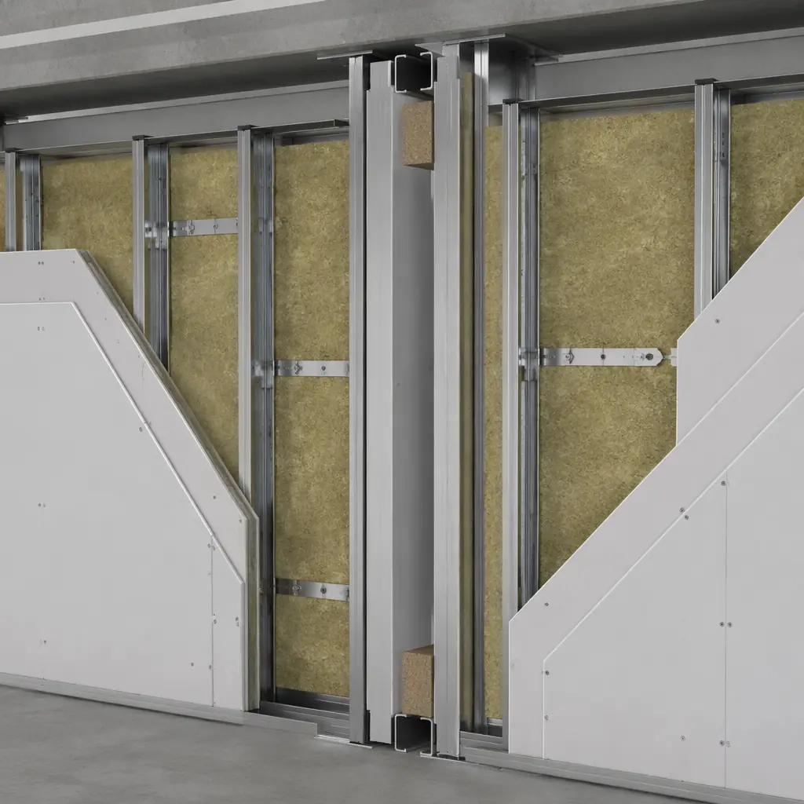
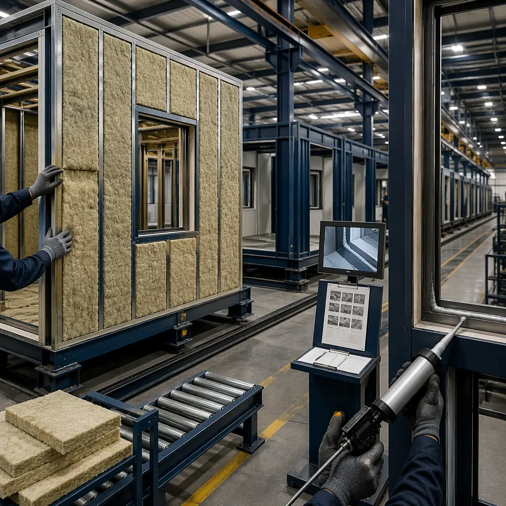
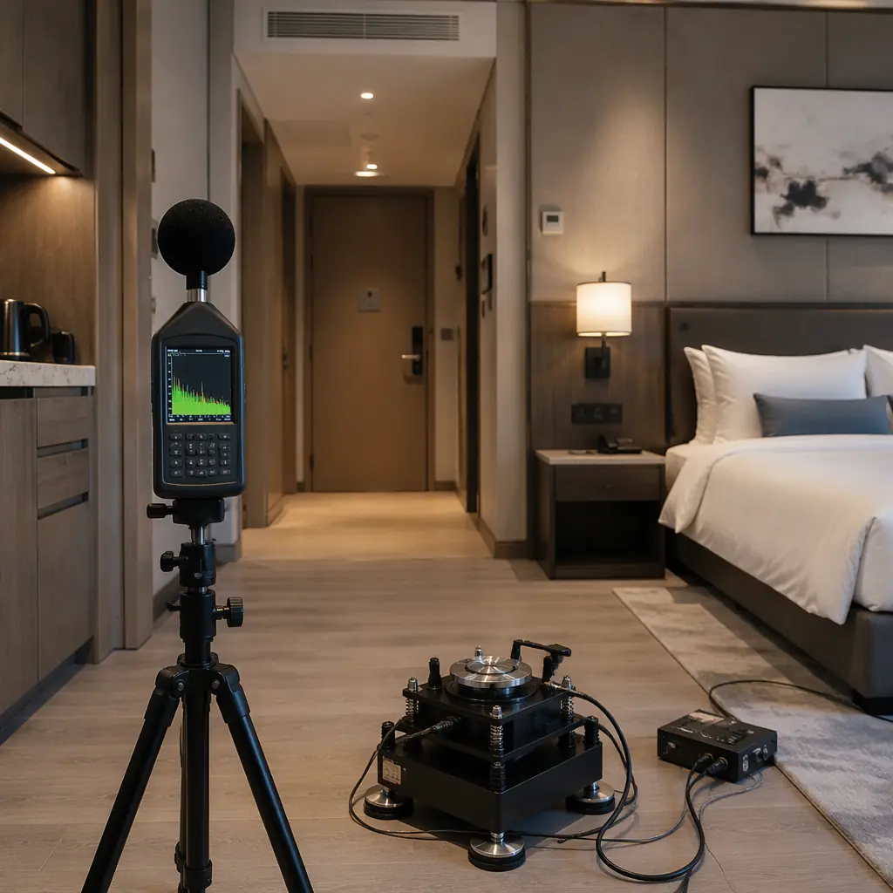

Sound transmission between units is the single most common complaint in multi-family and hospitality buildings — and the one that modular construction addresses better than any other building method. The structural separation inherent in modular construction — each module has its own floor, ceiling, and walls, creating a de-coupled double-assembly at every unit interface — delivers acoustic performance that conventional construction achieves only with expensive, field-verified add-on assemblies. This article examines the acoustic engineering behind modular construction: how double-wall assemblies achieve STC 55–62 without field-applied resilient channel, how impact noise isolation (IIC 55+) is built into the module floor assembly, how flanking paths are eliminated in factory construction, and what field test results from operational modular hotels and apartment buildings tell us about real-world acoustic performance.

The Physics of Modular Acoustics — Why Double Assemblies Excel
Sound transmission through building assemblies follows the mass law: doubling the mass of a partition improves sound transmission loss by approximately 5–6 dB (theoretical maximum) for airborne sound. But there is a far more effective strategy than adding mass: de-coupling. When two wall assemblies are physically separated by an air gap, sound energy must travel through the first assembly, excite the air in the cavity, and then excite the second assembly — a three-step path that dissipates far more energy than transmission through a single solid assembly of equivalent total mass.
Modular construction achieves de-coupling as an inherent property of the building system. When two modules are placed adjacent to each other, the demising wall consists of two separate assemblies: the wall of Module A and the wall of Module B, with a 25–75 mm air gap between them. Neither wall is structurally connected to the other. Each wall is independently supported by its module's floor and ceiling framing. This is acoustically closer to a true double-stud wall assembly — the gold standard for acoustic separation in multi-family construction — than to the single-stud wall with resilient channel used in conventional construction.
STC performance comparison:
- Conventional single-stud wall with resilient channel: STC 50–52 (typical field-tested value; laboratory ratings of STC 55–58 are common but field performance is consistently 3–6 points lower due to flanking paths and installation imperfections)
- Modular double-wall assembly (no resilient channel): STC 53–56 (field-tested, typical construction with single-layer 16 mm Type X gypsum board each side, 90 mm steel studs at 400 mm centers, 50 mm mineral wool in cavity, 25 mm inter-module air gap)
- Modular double-wall assembly (enhanced): STC 57–62 (field-tested, double-layer 16 mm gypsum board, staggered studs, 75 mm mineral wool, 50 mm inter-module air gap)
The key insight: a standard modular wall assembly without any acoustic enhancements outperforms a conventional wall with resilient channel, because the inherent de-coupling of the double-assembly eliminates the structure-borne flanking paths that degrade conventional wall performance in the field. Our modular vs traditional comparison covers structural and acoustic differences in depth.

Impact Noise Isolation — The Floor/Ceiling Advantage
Airborne sound isolation (STC) addresses speech, television, and music transmission between units. Impact noise isolation (IIC) addresses footfall, dropped objects, and furniture movement — and it is impact noise, not airborne sound, that generates the majority of noise complaints in multi-family buildings. Modular construction addresses impact noise through a fundamental structural advantage: the floor/ceiling assembly between vertically stacked modules is also a de-coupled double assembly.
In a conventional multi-family building, impact noise on the floor of Unit 2B transmits directly through the floor slab into the structural frame and then into the ceiling of Unit 1B below. The structural slab acts as a continuous path for impact energy — a hammer drop on the 8th floor can be heard on the 3rd floor, transmitted through the concrete structure with minimal attenuation. This is why condominium associations spend tens of thousands of dollars on post-construction acoustic remediation: adding floating floors, resilient underlayments, and suspended ceilings after residents complain.
In a modular building, impact noise on the floor of Module 2B must travel through Module 2B's floor assembly, cross the air gap between Module 2B's floor and Module 1B's ceiling, and then excite Module 1B's ceiling assembly. The structural discontinuity at the module interface — the two modules are connected only at their corner columns, not across their entire floor/ceiling planes — breaks the continuous structure-borne transmission path that plagues conventional construction.
IIC performance comparison:
- Conventional 200 mm concrete flat plate: IIC 28–32 (bare slab, no topping). With acoustic underlayment and floating floor: IIC 48–52 (field-tested, depends critically on underlayment installation quality and edge isolation detailing)
- Modular floor/ceiling assembly: IIC 50–55 (field-tested, standard construction with 18 mm plywood subfloor, 150 mm steel floor joists at 400 mm centers, 75 mm mineral wool in cavity, resilient channel at 400 mm centers with single-layer 16 mm gypsum board ceiling)
- Modular floor/ceiling (enhanced): IIC 55–60 (field-tested, same as standard plus 6 mm acoustic mat under finish floor, double-layer ceiling gypsum board on resilient channel, acoustic hangers for ceiling grid)
The standard modular assembly exceeds the IIC 50 code minimum for multi-family construction in most jurisdictions, without the acoustic mat and floating floor that conventional construction requires to reach the same threshold. For luxury hotel and condominium projects targeting IIC 55+, the enhanced assembly adds approximately $12–18 per square foot to the module manufacturing cost — installed in the factory, with quality verification, at roughly half the cost of field-installed acoustic remediation.
Flanking Path Elimination — The Factory Quality Advantage
Flanking transmission — sound traveling around a partition rather than through it — is the most common cause of acoustic failure in multi-family buildings. The field-measured STC of a demising wall is typically 5–10 points lower than its laboratory rating, and flanking paths account for 60–80% of that degradation. Flanking paths include:
- Perimeter gaps at wall-to-floor junctions. Gypsum board that stops 10 mm short of the floor slab, leaving a continuous air gap along the wall base
- Continuous structural elements. Floor slabs, structural steel, and continuous top tracks that carry sound energy around partitions
- Service penetrations. Electrical outlets, plumbing pipes, and HVAC ducts that penetrate demising walls without proper acoustic sealing
- Junction details. Wall-to-ceiling and wall-to-exterior-wall connections where acoustic sealant is omitted or incorrectly installed
In conventional construction, flanking path treatment depends on field trades executing acoustic details correctly — and field execution is inconsistent. A 2019 study by the National Research Council Canada found that 40% of field-inspected demising walls in multi-family buildings had at least one significant acoustic defect: missing or poorly installed acoustic sealant, gypsum board gaps exceeding 5 mm, continuous top tracks not separated at demising wall lines, or electrical outlet boxes installed back-to-back in the same stud cavity.
Modular construction addresses flanking paths at the source — in the factory, where every assembly detail is executed under controlled conditions with documented quality verification:
Acoustic sealant at all perimeters. In the factory, acoustic-rated sealant (typically ASTM C920 Class 25, non-hardening butyl or acrylic latex) is applied to every gypsum board-to-framing interface: wall-to-floor, wall-to-ceiling, and around all electrical boxes and service penetrations. The sealant is applied before modules leave the factory and verified during the factory quality control inspection. This eliminates the most common field defect — the missing or incomplete perimeter sealant bead — that degrades STC by 3–5 points in conventional construction.
Electrical outlet isolation. For a deeper look, our modular vs sip construction — which bui… guide covers the details. Back-to-back electrical outlet boxes in the same stud cavity create a direct airborne sound path between units — a "hole in the wall" that can reduce STC by 8–12 points. In modular construction, the double-wall assembly eliminates this risk: Module A's electrical outlets are in Module A's wall, and Module B's outlets are in Module B's wall. The two walls are physically separated, and any outlet boxes are backed by the opposite module's wall assembly as a sound barrier. Even if outlets are placed in the same horizontal location in both modules, the inter-module air gap provides at least 25 mm of physical separation that blocks the direct airborne path.
Service riser isolation. For a deeper look, our modular vs steel frame construction — s… guide covers the details. Plumbing and HVAC risers that run vertically through a multi-story building are a notorious flanking path in conventional construction: the pipe chase connects every floor acoustically, and pipe penetrations through floor slabs transmit impact noise and vibration between units. In modular construction, risers are isolated within each module's dedicated service shaft: pipes pass through the module floor with acoustically-sealed penetration details (intumescent collar plus acoustic mastic), and the shaft is lined with a fire-rated and acoustically-rated enclosure. The inter-module gap at the shaft is fire-stopped and acoustically sealed, blocking the continuous vertical transmission path.

Field Test Results — What Modular Actually Delivers
Laboratory acoustic ratings are useful for specification purposes, but what matters for building owners, hotel operators, and tenants is field-measured performance in occupied buildings. The following field test data from operational modular buildings demonstrates the acoustic performance that modular construction delivers in practice:
Modular hotel, Calgary (2022). For a deeper look, our modular vs wood-frame construction guide covers the details. A 120-room modular hotel tested 12 randomly selected demising wall pairs after six months of operation. Field STC values ranged from 53 to 58, with a mean of 55 — 3–5 points higher than the STC 50–52 typically measured in comparable conventional hotels. Guest satisfaction survey scores for "room quietness" ranked in the 92nd percentile of the brand's North American portfolio, compared to a brand average of 68th percentile for conventional-construction properties. The hotel attributes this directly to the modular construction method.
Modular student housing, Vancouver (2023). For a deeper look, our wildfire-resistant modular construction guide covers the details. A 210-unit student residence tested 20 demising walls and 20 floor/ceiling assemblies before occupancy. Mean airborne STC: 54 (range 52–57). Mean impact IIC: 53 (range 50–56). Both metrics exceeded the project's acoustic specifications (STC 50, IIC 50) by comfortable margins. Notably, the standard deviation of field STC measurements was 1.8 points — compared to 3.5–5.0 points typical of conventional student housing projects — reflecting the consistency advantage of factory-built assemblies.
Modular apartment building, Melbourne (2024). For a deeper look, our sustainable by design guide covers the details. A 45-unit affordable housing project tested all 44 demising wall pairs as part of the building commissioning process. Mean STC: 55 (range 52–58). Zero units failed to achieve STC 50, the minimum specified in the project brief. The project's acoustic consultant reported that "the modular construction method eliminated the typical field defects that require post-construction remediation in conventional projects" and that "the acoustic commissioning process was completed in two days versus the five days budgeted."
Acoustic Design Guide — Specification by Building Type
Different building types have different acoustic performance requirements. The following specifications provide modular assembly targets for each building category:
| Building Type | Min STC | Min IIC | Recommended Assembly |
|---|---|---|---|
| Luxury Hotel | 55 | 55 | Enhanced double-wall + enhanced floor/ceiling |
| Mid-Range Hotel | 50 | 50 | Standard double-wall + standard floor/ceiling |
| Luxury Condominium | 55 | 55 | Enhanced double-wall + enhanced floor/ceiling |
| Market-Rate Apartments | 50 | 50 | Standard double-wall + standard floor/ceiling |
| Student Housing | 50 | 50 | Standard double-wall + standard floor/ceiling |
| Senior Living | 50 | 50 | Standard double-wall + acoustic mat floor |
| Office (demising) | 45 | N/A | Standard double-wall |
Note: All assemblies deliver field-tested performance consistent with the specifications above. The "enhanced" assemblies add approximately $12–$18/sq ft to module manufacturing cost and are typically specified only for luxury hotel and condominium projects where premium room rates justify the incremental investment. Our resort construction guide covers luxury hospitality specifications including acoustic requirements. For healthcare projects requiring speech privacy (HIPAA compliance), refer to our hospital construction article for medical-grade acoustic specifications.

Specifying Modular Acoustics — What to Put in Your RFP
For architects and developers specifying modular construction, the following RFP language ensures that acoustic performance requirements are clearly defined and verifiable:
- Field-tested performance, not laboratory ratings. Require field STC and IIC testing of a minimum of 10% of demising wall/floor assemblies (or a minimum of 5 assemblies, whichever is greater), conducted by an independent acoustic consultant in accordance with ASTM E336 (airborne) and ASTM E1007 (impact). Laboratory STC/IIC ratings from assembly tests are informative but not sufficient: field performance with flanking paths is the true measure.
- Factory acoustic quality control. Require the modular manufacturer to document acoustic sealant application at all perimeter joints with photographs of each assembly before close-in. The quality control plan should specify sealant type (ASTM C920 Class 25), minimum bead size (6 mm continuous), and verification method (visual inspection sign-off by QC inspector).
- Module-level pre-delivery inspection. Require a pre-delivery acoustic inspection of modules at the factory: verify that all gypsum board edges are sealed, all electrical penetrations are caulked, and the inter-module gap dimension is within specified tolerance (±5 mm of design). Document with photographs tied to module serial numbers.
- Remediation protocol. Specify the procedure if a field test fails to meet the specified STC/IIC: the modular manufacturer is responsible for diagnostic investigation (identifying the flanking path) and remediation (sealing, adding mass, or installing field-applied acoustic treatment) at their cost, with re-testing to verify conformance.
- Warranty period. Require a 2-year acoustic performance warranty covering degradation of STC/IIC below specification due to material settlement, sealant failure, or assembly defects. Our warranties guide covers standard warranty terms for modular construction.
For building types where acoustic performance is a competitive differentiator — luxury hotels, premium multi-family, healthcare — modular construction's inherent double-assembly advantage provides a measurable performance edge that conventional construction can only match with expensive field-applied treatments. The factory quality control on acoustic detailing, combined with the elimination of the most common flanking paths, consistently delivers field STC and IIC values that meet or exceed the values achieved in conventional construction at equivalent or lower cost.